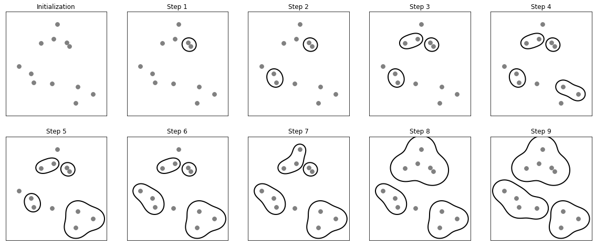
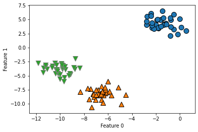
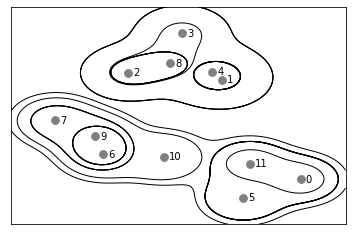
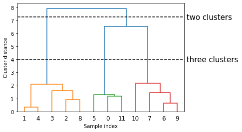

聚类算法
K-means
层次聚类
层次聚类scikit-learn实现
层次聚类（agglomerative clustering）指的是许多基于相同原则构建的聚类算法，这一原则是：算法首先声明每个点是自己的簇，然后合并两个最相似的簇，直到满足某种停止准则为止。scikit-learn 中实现的停止准则是簇的个数，因此相似的簇被合并，直到仅剩下指定个数的簇。还有一些链接（linkage）准则，规定如何度量“最相似的簇”。这种度量总是定义在两个现有的簇之间。
scikit-learn 中实现了以下三种选项。
- ward : 默认选项。ward 挑选两个簇来合并，使得所有簇中的方差增加最小。这通常会得到大小差不多相等的簇。
- average : average 链接将簇中所有点之间平均距离最小的两个簇合并。
- complete : complete 链接（也称为最大链接）将簇中点之间最大距离最小的两个簇合并。
ward 适用于大多数数据集，在我们的例子中将使用它。如果簇中的成员个数非常不同（比如其中一个比其他所有都大得多），那么average 或complete 可能效果更好。
下图给出了在一个二维数据集上的凝聚聚类过程，要寻找三个簇。
1 | mglearn.plots.plot_agglomerative_algorithm() |

下面我们使用sklearn对blobs数据集中的数据，来做一个层次聚类，看一下层次聚类的表现效果
注意：由于算法的工作原理，凝聚算法不能对新数据点做出预测。因此AgglomerativeClustering 没有predict 方法。
1 | from sklearn.cluster import AgglomerativeClustering |
Text(0, 0.5, 'Feature 1')

可以发现最终聚类效果是非常好的。
下面总结一下可视化层次聚类过程的代码实现
层次聚类与树状图
首先下面是一个简单的过程演示图
1 | mglearn.plots.plot_agglomerative() |

虽然这种可视化为层次聚类提供了非常详细的视图，但它依赖于数据的二维性质，因此不能用于具有两个以上特征的数据集。但还有另一个将层次聚类可视化的工具，叫作树状图（dendrogram），它可以处理多维数据集。
不幸的是，目前scikit-learn 没有绘制树状图的功能。但你可以利用SciPy 轻松生成树状图。SciPy 的聚类算法接口与scikit-learn 的聚类算法稍有不同。SciPy 提供了一个函数，接受数据数组X 并计算出一个链接数组（linkage array），它对层次聚类的相似度进行编码。然后我们可以将这个链接数组提供给scipy 的dendrogram 函数来绘制树状图。
1 | # 从SciPy中导入dendrogram函数和ward聚类函数 |
Text(0, 0.5, 'Cluster distance')
